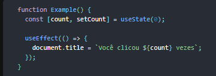
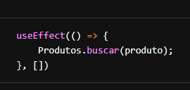

useEffect
O Effect Hook (Hook de Efeito) te permite executar efeitos colaterais em componentes funcionais:
Esse trecho de código é baseado no exemplo de contador da página anterior, mas nós adicionamos uma nova funcionalidade a ele: nós definimos o título do documento para ser uma mensagem customizada que inclua o número de cliques.
Buscar dados, configurar uma subscription, e mudar o DOM manualmente dentro dos componentes React são exemplos de efeitos colaterais. Esteja você acostumado ou não a chamar essas operações de “efeitos colaterais” (ou somente “efeitos”), você provavelmente já usou eles em seus componentes antes.
Se você está familiarizado com os métodos do ciclo de vida do React, você pode pensar no Hook useEffect como componentDidMount, componentDidUpdate, e componentWillUnmount combinados.
Efeitos Sem Limpeza
De vez em quando, nós queremos executar algum código adicional depois que o React atualizou a DOM. Requisições, mutações manuais do DOM e log são exemplos comuns de efeitos que não precisam de limpeza. Nós dizemos isso porque podemos executa-los e imediatamente esquecer deles. Vamos comparar como classes e Hooks nos permitem expressar tais efeitos colaterais.
Exemplo usando Classes
Em um componente de classe do React, o método render não deve causar efeitos colaterais. Seria muito cedo — nós geralmente queremos executar nossos efeitos depois que o React atualizou a DOM.
Isso é o porque nas classes do React, nós colocamos efeitos dentro de componentDidMount e componentDidUpdate.
Voltando ao nosso exemplo, aqui está um componente de classe do React chamado contador que atualiza o título logo
após o React faz as mudanças na DOM:
 Note que nós temos que duplicar o código entre esses dois métodos do ciclo de vida na classe.
Note que nós temos que duplicar o código entre esses dois métodos do ciclo de vida na classe.
Isso acontece porque em muitos casos nós queremos executar o mesmo efeito colateral não importando se o componente
acabou de ser montado ou foi atualizado. Conceitualmente, nós queremos que isso aconteça em cada renderização —
mas componentes de classe do React não tem um método assim. Nós poderíamos extrair um método separado mas ainda
assim teríamos que chamá-lo em dois lugares.
Agora vamos ver como podemos fazer a mesma coisa com o Hook useEffect.
Exemplo usando Hooks
Nós já vimos esse exemplo no topo da página, mas vamos dar uma olhada mais de perto:
O que o useEffect faz? Usando esse Hook, você diz ao React que o componente precisa fazer algo apenas depois da renderização. O React ira se lembrar da função que você passou (nos referiremos a ele como nosso “efeito”), e chamá-la depois que realizar as atualizações do DOM. Nesse efeito, mudamos o título do documento, mas podemos também realizar busca de dados ou chamar alguma API imperativa.
Por que useEffect é chamado dentro de um componente? Colocando useEffect dentro do componente nos permite acessar o state count (ou qualquer outra prop) direto do efeito. Nós não precisamos de uma API especial para lê-los — já está no escopo da função. Hooks adotam as closures do JavaScript e evitam APIs especificas do React onde o JavaScript já provê uma solução.
useEffect executa depois de toda renderização? Sim! Por padrão, ele roda depois da primeira renderização e depois de toda atualização. (Falaremos sobre como customizar isso depois.) Em vez de pensar em termos de “montando” (“mounting”) e “atualizando” (“updating”), você pode achar mais fácil pensar que efeitos acontecem “depois da renderização”. React garante que o DOM foi atualizado na hora de executar os efeitos.
Explicação detalhada
Agora que já sabemos mais sobre os efeitos, essas linhas devem fazer sentido: 
Declaramos o state count, e então dizemos ao React que precisamos usar um efeito. Passamos uma função para o Hook useEffect. Essa função que passamos é o nosso efeito. Dentro do nosso efeito, definimos o título do documento usando document.title da API do navegador. Podemos ler o último count dentro do nosso efeito por que ele está dentro do escopo da nossa função. Quando o React renderizar nosso componente, ele ira se lembrar do efeito que usamos, e então executar os nossos efeitos depois de atualizar o DOM. Isso acontece para cada renderização, incluindo a primeira.
Desenvolvedores JavaScript experientes podem perceber que a função passada para o useEffect vai ser diferente a cada renderização. Isso é intencional. Na verdade, isso é o que nos deixa ler o valor de count de dentro do efeito sem nos preocuparmos com ele ficar obsoleto. Toda vez que nós re-renderizarmos, agendamos um efeito diferente, substituindo o antigo. De uma maneira, isso faz os efeitos se comportarem mais como o resultado da renderização — cada efeito “pertence” à sua renderização especifica. Vamos ver mais claramente como isso pode ser útil depois, nessa página.
Ao contrário de componentDidMount ou componentDidUpdate, efeitos agendados com useEffect não bloqueiam o navegador a atualizar a tela. Isso faz seu app parecer mais responsivo. A grande parte dos efeitos não precisam acontecer de forma síncrona. Nos casos incomuns em que eles precisam (como medir o layout), existe um Hook useLayoutEffect separado com uma API idêntica ao useEffect.
Efeitos com limpeza
Anteriormente, nós vimos como expressar efeitos colaterais que não precisam de limpeza. Contudo, alguns efeitos precisam. Por exemplo, nós podemos querer configurar uma subscription para alguma origem de dados externa. Nesse caso, é importante limpar para que não causemos um vazamento de memória! Vamos comparar como faríamos isso com classes e com Hooks.
Exemplos usando classes
Em uma classe React, geralmente você configura uma subscription no componentDidMount, e limpa no
componentWillUnmount. Por exemplo, digamos que nós temos um módulo ChatAPI que nos permite fazer um subscribe ao
status de online de um amigo. Aqui esta como nós poderíamos fazer o subscribe e mostrar o status usando uma
classe:
 Preste atenção como componentDidMount e componentWillUnmount precisam espelhar um ao outro. Métodos do ciclo de
vida nos forçam a dividir essa lógica mesmo quando conceitualmente o código dos dois é relacionado ao mesmo
efeito.
Preste atenção como componentDidMount e componentWillUnmount precisam espelhar um ao outro. Métodos do ciclo de
vida nos forçam a dividir essa lógica mesmo quando conceitualmente o código dos dois é relacionado ao mesmo
efeito.
Leitores atentos talvez notem que esse exemplo também precisa de um método componentDidUpdate para ficar totalmente correto. Nós ignoraremos isso por enquanto, mas voltaremos nisso em uma sessão mais abaixo nessa página.
useEffect PARTE 2
O useEffect é um Hook que serve para lidar com os efeitos. Podemos usá-los como os lifeCycles componentDidMount,
componentDidUpdate e componentWillUnmount.
Imagine que a gente tenha uma API que nos retorna uma lista de produtos baseado no nome que passarmos.

O useEffect() recebe como primeiro parâmetro uma função que será executada assim que o componente renderizar. Então é um ótimo lugar para fazer requisições. Dessa maneira como escrevemos, a função passada ao useEffect() será executada sempre que o componente for atualizado. E se quisermos que a função seja executada apenas uma vez, que é quando o componente é inserido na tela, basta passar um Array vazio.
 Você pode executar quantos useEffects() quiser, o que nos dá mais controle sobre o que e quando algo deve ser executado.